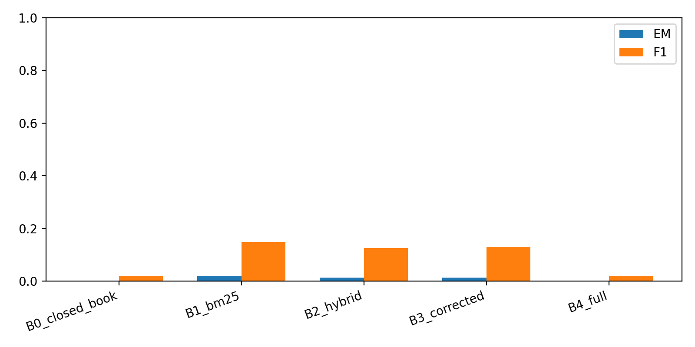
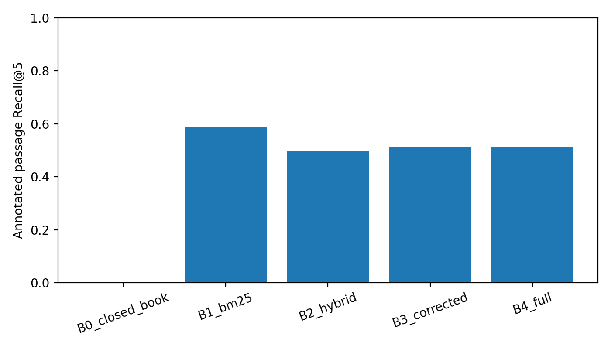
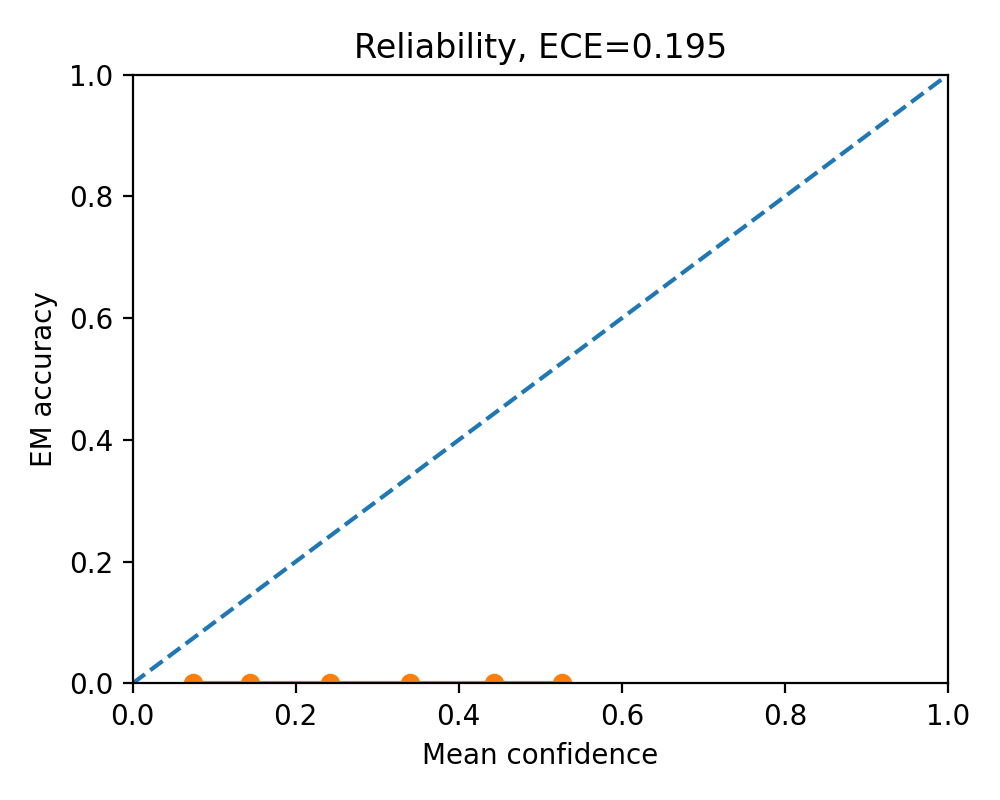
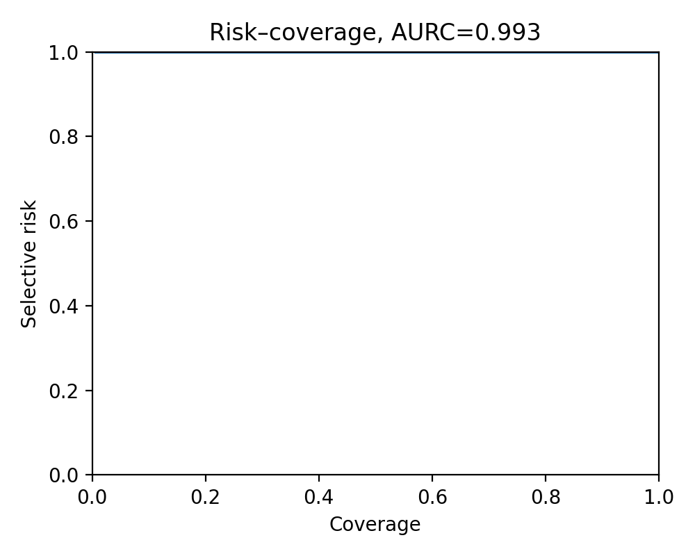
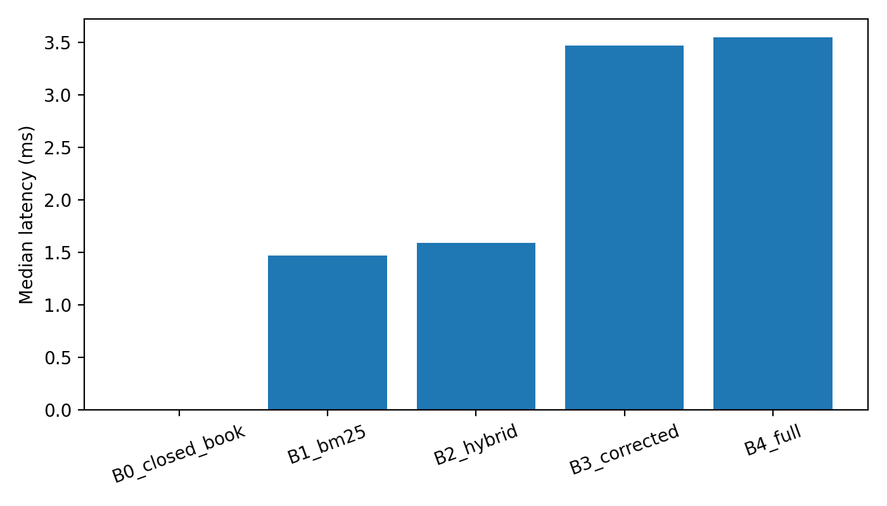
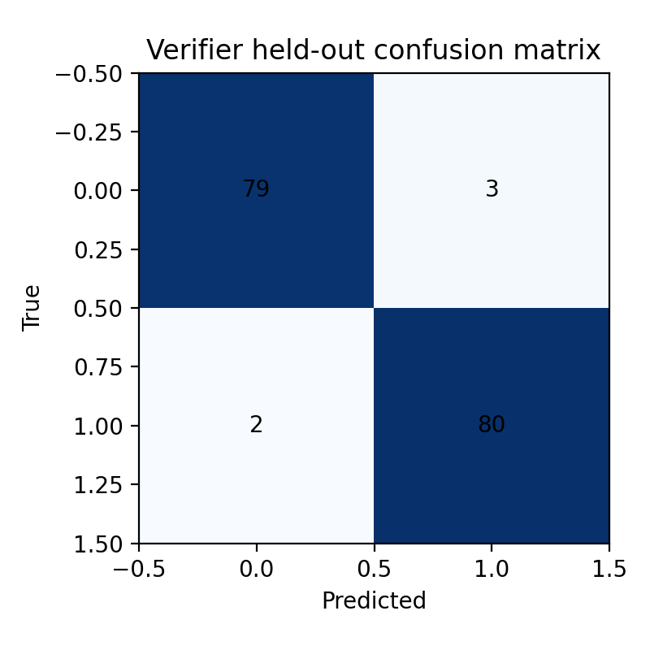

Measured Linux CPU pilot.
| method | em | f1 | coverage | selective_risk | recall_at_5 | median_latency_ms | p95_latency_ms | mean_retrieval_calls | mean_generation_calls |
|---|---|---|---|---|---|---|---|---|---|
| B0_closed_book | 0.000000 | 0.020000 | 0.0 | NaN | 0.000000 | 0.000000 | 0.000000 | 0.0 | 0.0 |
| B1_bm25 | 0.020000 | 0.148127 | 1.0 | 0.980000 | 0.586667 | 1.471151 | 1.802301 | 1.0 | 1.0 |
| B2_hybrid | 0.013333 | 0.126027 | 1.0 | 0.986667 | 0.500000 | 1.588786 | 2.165027 | 1.0 | 1.0 |
| B3_corrected | 0.013333 | 0.129785 | 1.0 | 0.986667 | 0.513333 | 3.471234 | 4.224380 | 1.8 | 1.8 |
| B4_full | 0.000000 | 0.020000 | 0.0 | NaN | 0.513333 | 3.547551 | 4.407757 | 1.8 | 1.8 |






Limitations: bounded corpus, extractive heuristic, support proxy, no human study.